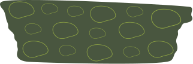
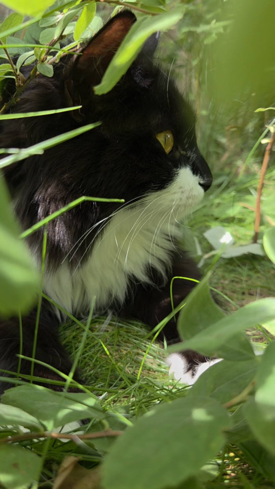
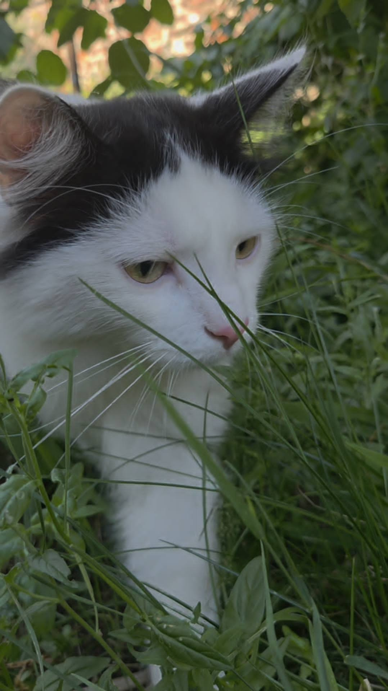
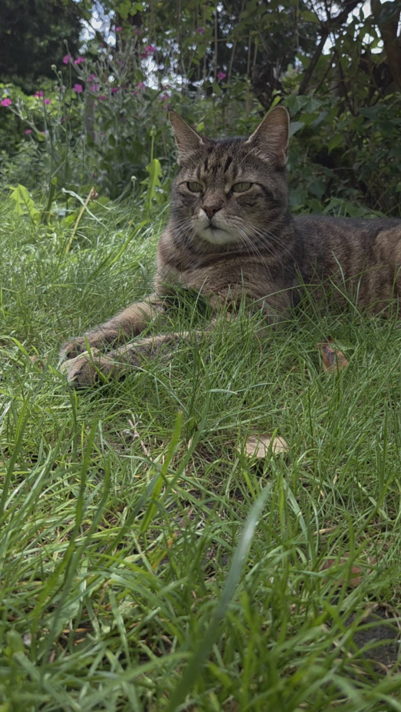
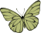
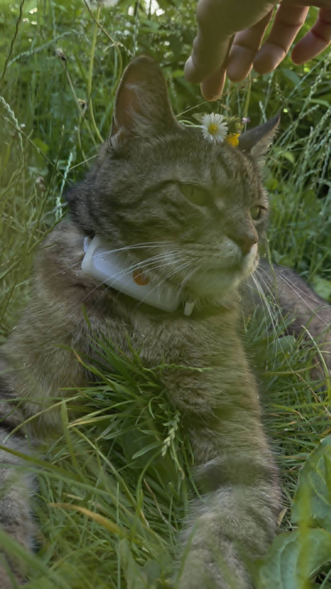

Consultations
Quatre façons de vous accompagner
Chaque accompagnement commence par une écoute : votre animal d'abord, vous avec. À domicile, à Bruxelles et alentours, ou en visio selon la demande.




Consultation
Comportement
Griffades, agressivité, anxiété, malpropreté, cohabitation difficile, arrivée d'un nouvel animal : derrière chaque « problème », il y a un animal qui essaie de dire quelque chose. Mon travail, c'est de le traduire — et de vous donner des clés concrètes, adaptées à votre quotidien.
Le ton est posé une fois pour toutes : il n'y a pas de mauvais humain ici, et pas de mauvais animal non plus.
Sujets abordés
- Griffades & marquage
- Anxiété, peurs, stress
- Malpropreté
- Cohabitation multi-chats / chiens
- Intégration d'un nouvel animal
- Signaux & langage de l'animal
- Promenades & quotidien du chien
- Difficultés du quotidien
Comment ça se passe
-
L'échange
On se parle : votre animal, son histoire, ce qui coince, ce que vous avez déjà tenté.
-
L'observation
À domicile ou en visio : je regarde l'animal vivre dans son territoire, sans le brusquer.
-
Le plan
Des ajustements concrets et réalistes, expliqués — vous comprenez le pourquoi de chaque geste.
-
Le suivi
On garde le lien : on ajuste ensemble jusqu'à ce que ça aille mieux, pour lui et pour vous.



Consultation
Nutrition
Le chat est un carnivore strict, le chien un carnivore latent : tout part de là. Bilan personnalisé, transition alimentaire en douceur, lecture des compositions et des étiquettes — dans le respect de leur physiologie, sans dogme et sans culpabilisation.
Sujets abordés
- Bilan alimentaire personnalisé
- Transition alimentaire
- Lecture des compositions
- Recettes maison & BARF
- Compléments naturels
- Hydratation & alimentation humide


★ Spécialité signature
Aménagement animal-friendly
Un chat d'intérieur ne vit pas dans votre salon : il vit dans son territoire. Formée à l'architecture d'intérieur, je conçois des espaces beaux pour vous et justes pour eux — sans transformer votre maison en arbre à chat géant.
L'intérieur devient un territoire vivant : hauteurs, parcours, cachettes, points d'eau, zones de repos. Chaque proposition respecte votre style et votre budget.
Sujets abordés
- Parcours muraux & hauteurs
- Cachettes & zones de repos
- Points d'eau & fontaines
- Zone d'alimentation & litières
- Plantes sans danger
- Enrichissement du chat d'intérieur
- Cohabitation multi-chats
- Choix de mobilier
Comment ça se passe
-
L'échange
Vos animaux, vos contraintes, vos envies déco — tout compte.
-
La visite
Je lis votre intérieur comme un territoire : passages, tensions, ressources.
-
Le plan
Des propositions dessinées et concrètes, du réaménagement léger au projet complet.
-
Le suivi
On observe comment vos animaux adoptent les lieux, et on affine.



Consultation
Garde & soins à domicile
Partir l'esprit tranquille : vos animaux restent chez eux, dans leurs repères, gardés par une soigneuse animalière professionnelle. Visites quotidiennes ou biquotidiennes, alimentation respectée à la lettre, médicaments, suivi santé et comportement.
Et chaque jour : un compte rendu photos et vidéos — vous les voyez vivre, vous partez vraiment.
Ce qui est inclus
- Visites 1× ou 2× par jour
- Alimentation & eau fraîche
- Médicaments & soins
- Litières & entretien
- Jeu, présence, câlins
- Compte rendu quotidien photos/vidéos

Votre animal d'abord, vous avec.
Une question, un doute sur la formule qu'il vous faut ? Écrivez-moi.